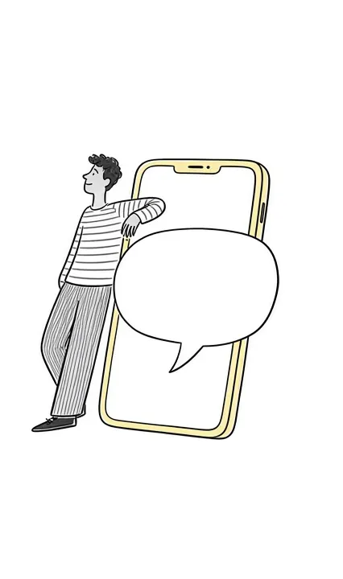

Keep loving them after loss.
You do not have to move on to keep going. Murido is a quiet, private place to carry grief, preserve their story, and say what still needs saying, at 3am, on the hard anniversaries, or on an ordinary Tuesday when it catches you off guard.
- No timelines
- Private by default
- Made for grief, nothing else
Somewhere to put what you are carrying.
Four ways Murido meets you, depending on the day.
Some days you want to talk it out. Some days you want quiet company. Choose the companion that fits how you grieve today.
Guided prompts help you hold on to the details you are afraid of losing. Everything stays private on your phone.
Invite the people who loved them too. Everyone adds their own stories, so no one's memories get lost.
Reflection sessions for guilt, anger, anniversaries, and firsts. Letter writing for "I miss you," "I'm sorry," and "I hope you knew."
A few minutes a day, at your own pace.
Tell Murido who you lost
Share a name and a little about them. Murido uses it to make every prompt and conversation about your person, not grief in general.
Remember, reflect, write
Answer a daily memory prompt, work through a hard feeling, or write the letter you never got to send.

Talk whenever it hits
When grief shows up out of nowhere, a companion who already knows your story is there, without rushing you anywhere.
Made for remembering, not for moving on.
General chatbots try to fix things. Journals cannot answer back. Counseling is invaluable but not there at 3am. Murido fills the space in between.
| Murido | General AI chat | A journal | Grief counselor | |
|---|---|---|---|---|
| Built only for grief and remembrance | ✓ | × | Sometimes | ✓ |
| Never rushes you to move on | ✓ | × | ✓ | ✓ |
| Available at 3am | ✓ | ✓ | ✓ | × |
| Remembers who you lost | ✓ | × | You do | ✓ |
| Guided memory prompts | ✓ | × | DIY | Sometimes |
| Letters for unfinished conversations | ✓ | × | DIY | Sometimes |
| Shared memory book with family | ✓ | × | × | × |
| Licensed clinical care | × | × | × | ✓ |
We always encourage working with a grief counselor or therapist if you can. Murido is here between sessions, and for everyone who cannot get one.
In their words.
Real reviews from the App Store.
A genuine source of comfort
Murido has been an incredibly meaningful source of comfort while I've been navigating grief. It gives me a gentle, private space to express feelings that can be difficult to put into words, while helping me preserve precious memories of the person I lost. The thoughtful prompts, reflections, and supportive conversations make me feel heard and less alone, especially on the hardest days when grief arrives unexpectedly. This app was clearly created with so much care and compassion, and I'm truly grateful to have found it. ❤️
Helps me feel close to him
Murido has been really comforting since my brother passed. I use it to save little memories about him, write down things I don't want to forget, and just feel close to him in a way. It's become a really special place for me to keep his memory alive.
I miss my mom every day
I lost my mom last year and honestly there's not a day that goes by where I don't think about her. I started using Murido to keep all the little memories I have of her in one place. Things she used to say, funny moments we shared, and all the small stuff I never want to forget. It's been really comforting to have somewhere I can go when I miss her and feel a little closer to her again
What you write about them stays yours.
Grief is about as personal as it gets. Murido was built around that from the start.
On-device Memory Board
Everything on your Memory Board is stored on your phone, not uploaded to our servers.
Shared only by invitation
Memory books are shared only with the people you invite, and only that book.
Never sold
We do not sell your data or share your conversations with advertisers. Read the privacy policy.
Frequently asked questions
Is Murido therapy?
No. Murido is a grief reflection, remembrance, and self-help tool. It does not diagnose, treat, or replace a licensed therapist or grief counselor. Many people use it alongside counseling, as a place to process what comes up between sessions.
What does Murido cost?
Murido is free to download. Murido Pro, which unlocks the companions, personalized prompts, reflection sessions, letter writing, and memory features, is $59.99 per year through your Apple Account. You can manage or cancel it any time in your Apple Account settings.
Who can see what I write?
By default, only you. Your Memory Board is stored on your device. If you invite someone into a shared memory book, they see the entries in that book and nothing else you have written.
Can my family add their own memories?
Yes. Invite them into a shared memory book and they can add their own stories, so the person you lost is remembered the way everyone actually knew them.
Will it try to make me move on?
Never. Murido is built on the idea that love continues after loss. The companions will not rush you toward closure, hand you platitudes, or tell you how long grief should take.
What if I'm in crisis?
Murido is not a crisis service. If you are in crisis, call or text 988 (US Suicide & Crisis Lifeline), text HOME to 741741, or call 911 if you are in immediate danger.
You do not have to carry it alone.
Start with a gentle, free check-in. A few quiet questions about how grief is showing up for you right now.
Take the Free Grief Check-In